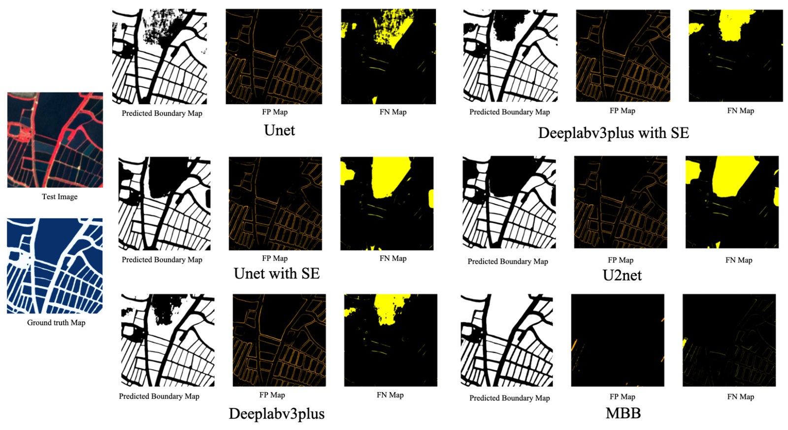
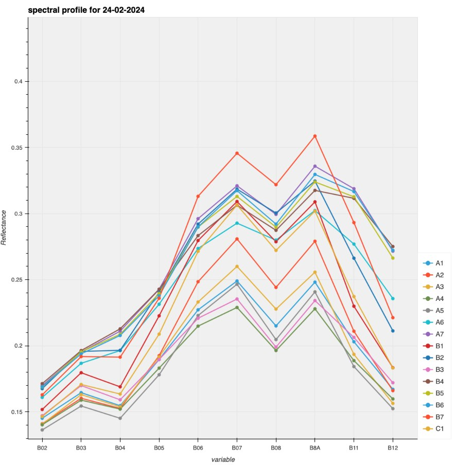
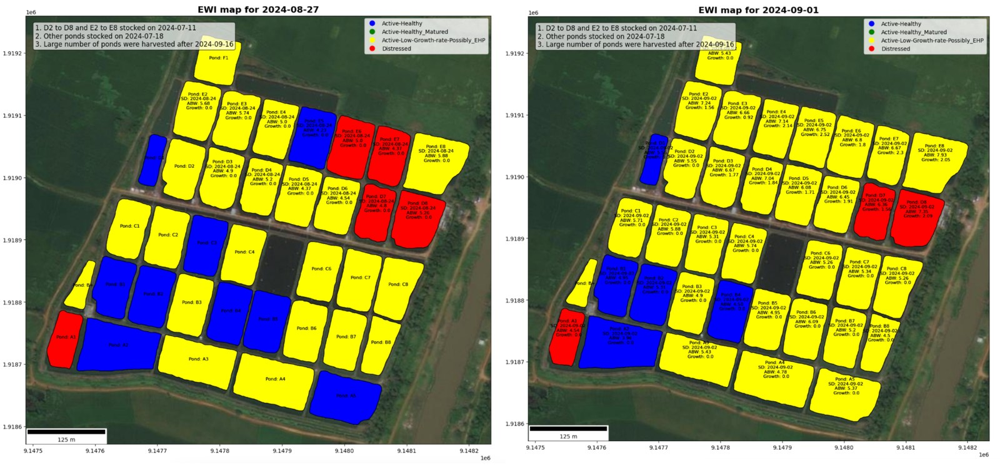
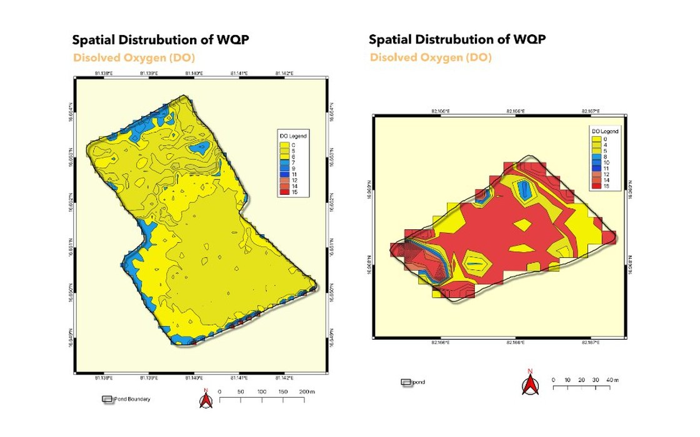
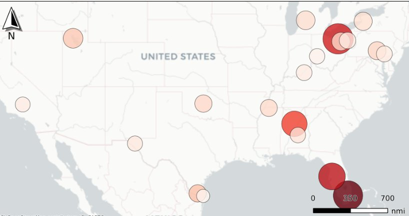
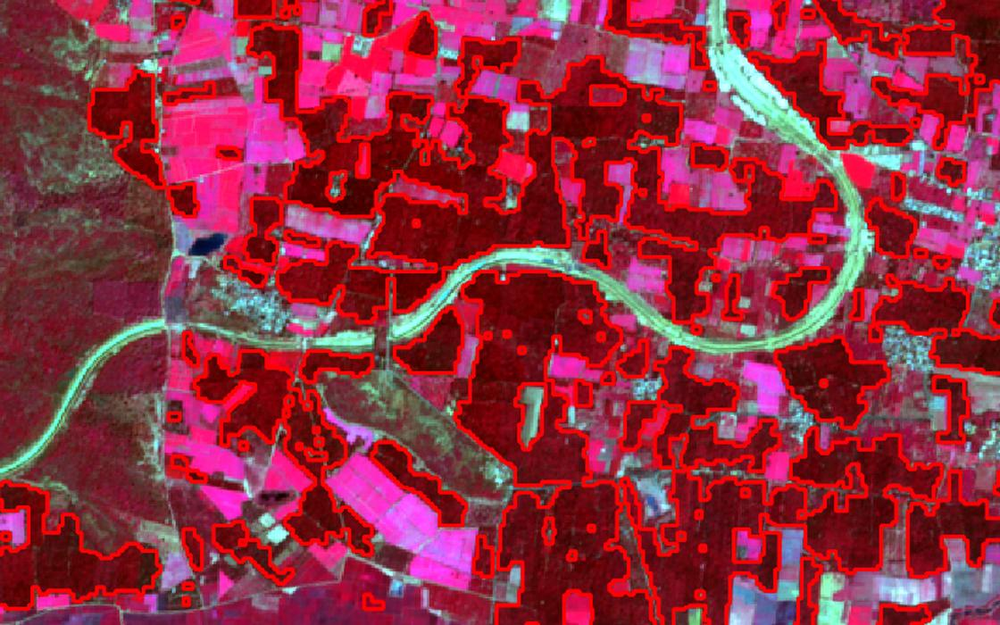
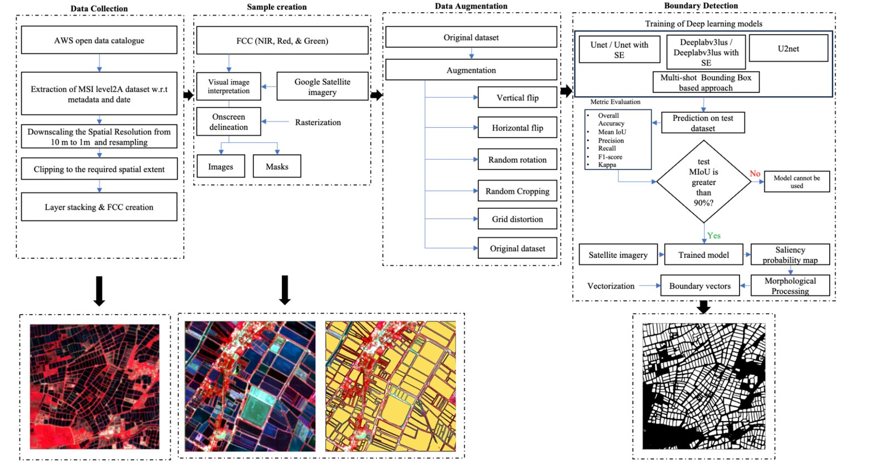

Zubair Ahmed
Geospatial Data Scientist
I use location intelligence in conjunction with informatics to solve problems related to geography — building GeoAI systems that read land and water from satellite imagery.
About me
Bridging geospatial analytics and ecological applications.
I am a data scientist with a strong background in remote sensing, GIS, AI/ML and geospatial data analytics. I hold an M.Tech in Geoinformatics — using location intelligence in conjunction with informatics to solve problems related to geography.
I have over 4 years of intersecting work experience across remote sensing and AI, and I specialise in developing geospatial, data-driven solutions powered by GeoAI.
Through my research I aim to bridge the gap between geospatial data analytics and ecological applications for monitoring sustainability.
Tools I work with
- Role
- Data Scientist, Captain Fresh — Aug 2022 to present
- Education
- M.Tech Geoinformatics, KSRSAC (VTU) — 9.23 CGPA
B.Tech Civil Engineering, HKBK (VTU) — 8.34 CGPA - Recognition
- GATE 2024 — All India Rank 355
- Sensors
- Sentinel-2 MSI · Sentinel-1 SAR · high-resolution optical
- Field area
- Krishna–Godavari delta, Andhra Pradesh
- Location
- Bengaluru, Karnataka, India
Services
What I do
Four areas where satellite data turns into something a business can act on.
Remote Sensing
Multispectral, thermal and SAR interpretation. Spectral index design, phenology and change detection over time.
GeoAI & Machine Learning
Semantic segmentation and object detection on imagery — U-Net, DeepLabv3+, U²-Net, SAM and YOLOv8, from ground truth to trained model.
Geospatial Data Engineering
Scalable extraction and processing pipelines with Xarray, Dask and STAC, orchestrated and containerised for production.
Spatial Analysis & DataViz
Regression against in-situ measurements, rule-based decision systems, and maps that make the result legible.
Portfolio
My portfolio at a glance
Production systems, research and academic projects. Filter by discipline.

Deep Learning · Engineering
Aqua-Boundary
YOLOv8 proposes pond regions, SAM ViT-H refines them to masks, vectorised to GeoJSON. 94% mIoU across four districts.
Case study
Spectral Analysis · Research
Shrimp Index (SI)
A species-specific index derived from red edge and SWIR reflectance, quantifying shrimp health from orbit.
Case study
Remote Sensing · Decision system
SIRAS / EWIS
Rule-based early warning from spectral rate of change and in-situ body weight sampling. 80% overall accuracy.
Case study
Object Detection
Aerator Detection & On/Off Classification
YOLOv8 tuned for micro-targets that occupy only a few pixels, localising aerators and classifying whether each is running. 78% mAP.
Case study
Regression · Water quality
Water Quality Estimation from Sentinel-2
Six XGBoost regressors on reflectance and water indices, gated at R² ≥ 0.7. Four of six parameters deployed to wall-to-wall maps.
Case study
Spatial Analysis · Retail
Store Location Intelligence
Geospatial enrichment of US metro regions feeding a Random Forest revenue model at 0.83 test R², ranking the top 20 expansion locations.
Case study
Classification · Expert system
Palm Tree Classification & Area Estimation
A four-threshold rule on NIR, red and red edge reflectance separates palm canopy with no training labels. 185 km² of acreage mapped.
Case studyPublished Research
Area Estimation of Mango and Coconut Crops
U-Net with a ResNet34 backbone against Random Forest on Sentinel-2 over Hesaraghatta, Bengaluru. 84% accuracy.
Read the paper ↗Deep Learning
Production Estimation of Horticulture Crops
U-Net and Random Forest on Sentinel-2 for acreage and production estimation, with transfer learning to new study areas.
Python · GEE · TensorFlowClassification
LULC Classification using DNNs
Random Forest and Deep Neural Network models trained to classify diverse land cover features across Mandya District.
Python · GEE · TensorFlowGeotechnical Research
Soil Stabilization using Fly Ash and Bacteria
Class ‘C’ fly ash combined with soil bacteria, evaluated over curing periods to measure the effect on bearing capacity.
Undergraduate thesisFeatured project
Aqua-Boundary

Automated pond boundary detection from satellite imagery
Surveying in aquaculture is still done by hand — slow, expensive and error-prone. This pipeline replaces it with a two-stage GeoAI model orchestrated as independent Temporal activities, emitting production-ready GeoJSON.
- Six models trained and benchmarked; YOLOv8 + SAM ViT-H outperformed the rest.
- 94% mIoU sustained across four geographically distinct regions.
- 30 minutes of manual digitisation per tile reduced to 2 minutes.
- Shipped as separate API and worker Docker images.
Contact
Contact me
Feel free to reach out through any of the channels below — I am open to work in earth observation, agriculture and aquaculture.